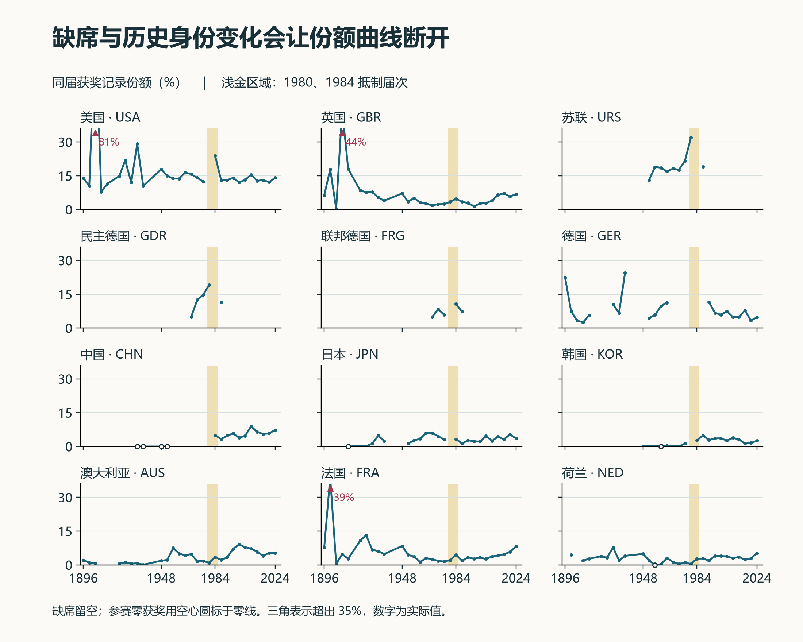
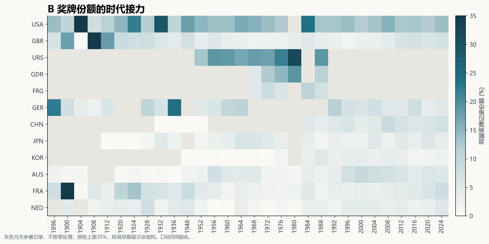

十二个代表团的逐届奖牌记录份额展示了至少八个具有不同轨迹的国家与地区。美国的长期优势并非固定占比：1904 年的 81% 是早期特殊参赛格局下的极端值，战后多数届次约为 12%—16%。苏联从 1952 年起迅速进入高份额区间，1988 年之后的身份转变使曲线自然中断。东德、西德和统一后的德国分别呈现，避免把不同政体当作同一个连续主体。中国自 1984 年形成连续轨迹，2008 年约占 9.0%，2024 年约占 7.4%。日本、韩国等代表团的进阶也可在图中与同届整体规模同步观察。

热力图中的空白表示没有参赛记录，不能解释成零奖牌。1980 与 1984 年抵制潮、主场届和历史政体变化，都会扰动表面排名。作为机制核查，本报告还对主场效应进行了扩展合成对照与稳健性分析：高拟合 14 案例平均差为 +2.24 个百分点，但主办权选择仍限制因果解释。

**口径与复核。** 指标为当届某代表团获奖运动员记录数除以当届全部获奖运动员记录数；历史代码分别保留，1906 排除。数据表：十二代表团逐届份额。